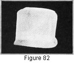
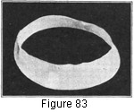

1930—Millinery Processes
by Carlotta M. Brown
MODELING
Free-hand Modeling
The most satisfactory frame materials for this are crinoline and flexible crinoline. These are light in weight, but they have sufficient stiffness to shape readily into the forms desired. Where small brims are wanted, the brim and the side crown may be modeled in one piece; but where a wider brim is to be used, the crown and the brim are made separately.
Brim and Side Crown in One Strip
On a model of this type the usual width of a brim, which is made double, is 2 inches. Cut a bias strip 8 or 9 inches wide according to the size of the oval crown top, and for its length use the head-size measurement plus 1 inch for the seam-lapping at the back. The seam-lapping in this case may be either upright or diagonal. Sew by machine or by hand. Cut a straight strip of the material 1 inch wide and as long as the head size plus 1 inch for flat joining at the back. This is to be used as a head-size band to keep the bias from stretching at this point. Measure 2 inches from one edge of the bias circle to establish the turning point for the brim, and fold back so that the raw edge is on the top of the brim (Fig. 82). Slip the head-size band over the side crown and down over the upturned raw edge. Attach with long even stitches. Cut a small oval crown top and attach to the side crown (Figs. 24-25). Place on the head for the shaping of the brim and the adjusting of the crown. The brim may be turned at the back or side or left straight, as the individual chooses. If a waved effect is desired around the face, the frame material is pulled out between the fingers to give this fullness. If a very narrow brim at the back is wanted, the head-size band may be lowered across the back; but if this is done the same amount must be cut from the top of the crown to keep the correct proportions. Folds also may be arranged at the back or the sides of the crown to regulate the line most becoming to the wearer.
Figure 82. Free-hand modeling of brim and crown in one piece.
Brim and Crown modeled Separately
Brim. The brim with a decided flare is modeled separately from the crown. Cut a bias strip from 4 to 6 inches wide for the double brim, allowing from 2 to 3 inches on the length of the strip for flare and joining. Make a head-size band as described above. Pin the bias brim to the head-size band to determine the amount of fullness desired. Fit the brim to the head as this is being done. Join at the back with a flat seam.
Figure 83. Free-hand modeling of brim. Ribbon wire attached to brim for bracing.
Crown. Model as for the 2-piece soft crown with oval or round top. If desired, this may be pressed over a block, to give a flat, smooth surface.
If a plain crown is to be used, follow the method described in blocking over a cork block (Fig. 12).
Brim made from a Drafted Pattern
It may sometimes be necessary, instead of modeling frames free-hand, to make either flat or rolling ones from a flat piece of frame material too stiff for free-hand modeling, or without the aid of a block. Any of the stiffer frame materials may be used in the construction of these frames, or a combination may be employed, the stiffer quality for the brim and the lighter for the crown. The flat brim requires no seam at the back, but where the brim has a decided roll or droop the brim necessarily must be seamed.
Construction. Place the front of the pattern (see Drafting) on the straight thread of the frame material, pinning at the front, back, and sides and allowing a 1-inch lapping at the back if a seam is to be used. Cut. Make a flat seam at the back of the brim, using a short stab stitch (Fig. 131, C). See that the outer edge of the brim is trimmed evenly, cut the tabs at the head size, and sew the head-size wire into place with a lock stitch, the short stitch in this case coming over the wire. Then wire the outer edge of the brim with a 1-inch lapping at the back and with the lock stitch used for attaching the wire to the brim. A reenforcing wire, if needed, may be placed midway between the head size and the edge wire.
Thimbled roll. An ordinary thimble may be used for outlining a definite roll at any part of the brim. Place the facing of the brim in the palm of the left hand, and with the thimble on the thimble finger rub the brim lightly at the point at which the roll is to be started. Repeat as often as necessary until the roll is of sufficient curve.